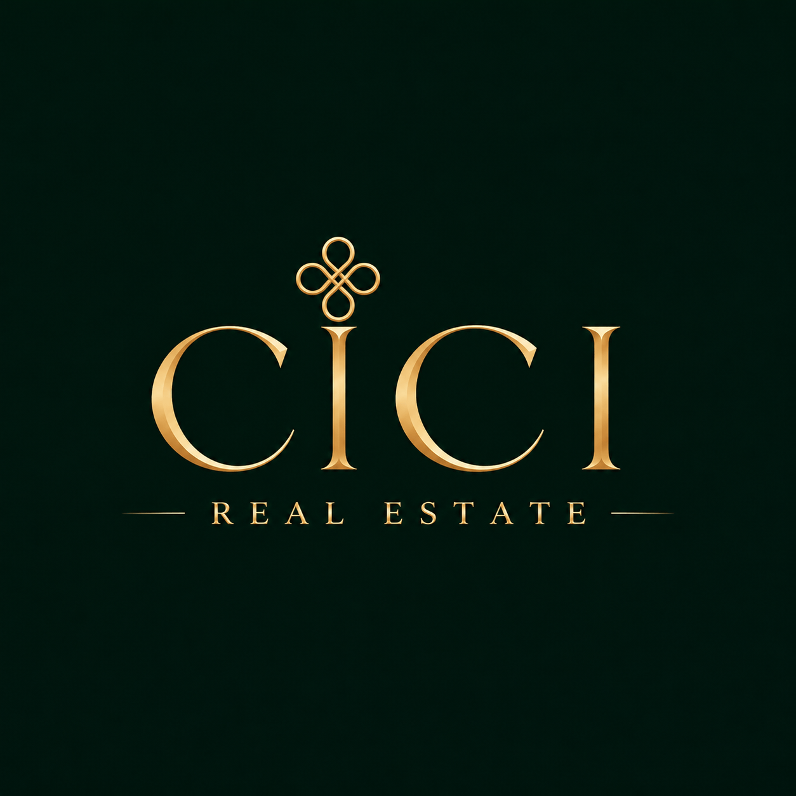
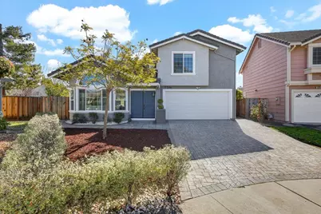

Concentrate / 专注
聚焦斯坦福周边高端住宅与半岛生活圈。为 AI 从业家庭梳理居住、通勤、工作空间与长期家庭需求，让每一次选择都有清晰依据。
 CiCi WangCONCENTRATE & CARE
CiCi WangCONCENTRATE & CAREPENINSULA REAL ESTATE · A PERSONAL APPROACH
专注好房，关心人生。
CiCi = Concentrate and Care
专注斯坦福周边高端住宅，陪伴 AI 从业家庭，
也关心每一次选择背后的生活。
Los Altos · Mountain View · Palo Alto · Peninsula

A HOME. A CONNECTION. A NEW CHAPTER.01 / SELECTED PORTFOLIO
从真实的房源与成交开始，了解 Cici 的工作。
精选展示，不代表完整历史成交清单。

SOLD · 已成交San Jose, CA 95131
5 Beds · 3.5 Baths · 2,441 Sq Ft
 PENDING · 待成交
PENDING · 待成交Sunnyvale, CA 94085
2 Beds · 2.5 Baths · 1,378 Sq Ft
资料核实：2026.11.17 · 每个案例均设独立页面与来源链接。图片来自对应的 Coldwell Banker 公开房源页。
02 / THE TWO C’S
专注，是把事情做好。
关心，是把你放在心上。
家的选择，从来都和人生连在一起。CiCi 希望成为你在本地可以信赖的朋友：认真讨论房子，也愿意听你聊聊家庭、职业与下一步计划。
聚焦斯坦福周边高端住宅与半岛生活圈。为 AI 从业家庭梳理居住、通勤、工作空间与长期家庭需求，让每一次选择都有清晰依据。
从教育信息、职场变化，到买房、安家与日常生活，把你的目标和顾虑认真听完。你也可以聊创业、聊想法、聊一个新的开始。
以清晰沟通、细致准备与持续跟进，建立长久的关系。房产交易有节点，用心陪伴可以更长远。
03 / A HOME WITHIN A LIFE
一起整理学校与社区资源，把家庭成长放进居住选择；具体入学资格由学区确认。
理解 AI 行业的工作节奏，讨论通勤、远程办公和职业变化下的住房安排。
从看房到入住，关注维护、空间使用与日常便利，让生活慢慢安定下来。
愿意听你聊创业与人生计划，交流想法、梳理需求，专业事项可寻求相应顾问协助。
04 / FROM PREPARATION TO PRESENTATION
每一处房子，都值得一份量身制定的计划。具体服务范围、供应商和费用在委托前确认。
梳理空间、色彩与更新优先级，让预算围绕房屋优势与销售目标展开。
讨论适合房屋的布置方案，让买家更容易理解空间、采光与生活方式。
整理维护与修缮事项，协调准备进度，专业工程由相应服务人员评估。
规划摄影、房源页面、开放日与数字传播，以准确、完整的内容呈现房子。
CICI WANG · COLDWELL BANKER REALTY
05 / MEET CICI
房子承载的，是每个家庭不同的人生安排。Cici 以认真倾听与本地房产知识，陪你梳理目标、看清选择，并推进买卖过程中的每一步。
服务关注 Los Altos、Mountain View、Palo Alto 与 Peninsula。普通话与英语沟通。Coldwell Banker Realty · CalRE #02039658。
06 / C-LOG
Cici 的品牌内容专栏。首批为网站编辑示范文章，待 Cici 审阅后署名发布。
YOUR LOCAL HOME VALUE
从一个地址开始，讨论真实可比成交、房屋状况与适合你的下一步。